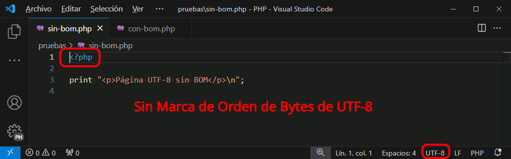
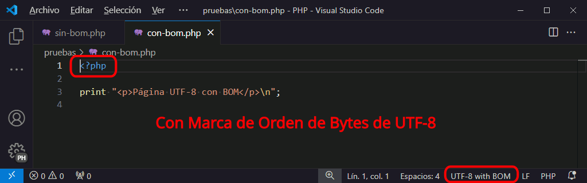

La función header()
Como se explica en la lección sobre el protocolo HTTP, cuando un servidor envía una página web al navegador, no sólo envía la página web, sino también información adicional (el estado y los campos de cabecera). Tanto el estado como los campos de cabecera se envían antes de la página web.
Normalmente, un programa PHP sólo genera la página web y es el servidor el que genera automáticamente la información de estado y los campos de cabecera y los envía antes de enviar el contenido generado por el programa. Pero un programa PHP también puede generar la información de estado y los campos de cabecera, mediante la función header().
El ejemplo siguiente muestra un ejemplo de cabecera HTTP, concretamente una redirección. En el ejemplo siguiente, la página 1 contiene un enlace a la página 2. Pero como la página genera una cabecera HTTP de redirección a la página 3, al hacer clic en el enlace se muestra la página 3.
<p>Esta es la página 1.</p>
<p><a href="cabeceras-header-1-2.php">Enlace a la página 2 (que redirige a la página 3)</a></p>
<?php
header("Location:cabeceras-header-1-3.php");
print "<p>Esta es la página 2</p>";
print "<p>La redirección <strong>NO</strong> se ha realizado</p>";
print "<p><a href=\"cabeceras-header-1-1.php\">Volver a la página 1</a></p>";
?>
<p>Esta es la página 3.</p>
<p>La redirección <strong>SÍ</strong> se ha realizado.</p>
<p><a href="cabeceras-header-1-1.php">Volver a la página 1</a></p>
Es muy importante tener en cuenta que la función header() no debe utilizarse una vez se ha generado contenido HTML (por ejemplo, con un print). El motivo es que en cuanto un programa genera contenido HTML, el servidor genera automáticamente la información de estado y los campos de cabecera y a continuación envía el contenido generado. Si después el programa contiene una instrucción header(), se produce un error porque las cabeceras ya se han enviado, como muestran los dos ejemplos siguientes.
En el ejemplo siguiente, se llama a la función header() después de un print, lo que provoca un aviso de error.
<?php
print "<p>Intento fallido de redirección</p>\n";
header("Location:http://www.example.com");
?>
Intento fallido de redirección
Warning: Cannot modify header information - headers already sent by (output started at ejemplo.php:2) in ejemplo.php on line 3
En el ejemplo siguiente, se llama a la función header() en un programa que ya ha generado contenido antes del fragmento PHP, lo que provoca un aviso de error:
<p>Intento fallido de redirección</p>
<?php
header("Location:http://www.example.com");
?>
Intento fallido de redirección
Warning: Cannot modify header information - headers already sent by (output started at ejemplo.php:2) in ejemplo.php on line 3
Por ello hay que tener mucho cuidado en no generar nada de texto antes de utilizar la función header(), ni en el programa ni en las bibliotecas a las que se llame en el programa.
Hay que tener en cuenta que una simple línea en blanco antes del bloque PHP sería suficiente para impedir el envío de la cabecera:
<?php
header("Location:http://www.example.com");
?>
Warning: Cannot modify header information - headers already sent by (output started at ejemplo.php:2) in ejemplo.php on line 3
Nota: Otra situación que puede provocar el fallo de la función header() es cuando el programa contiene un error antes de la función header(), ya que PHP generará un aviso de error que es también parte de la salida del programa y eso provocaría el fallo de la función header() posterior. Esta situación suele darse al desarrollar el programa, ya que normalmente los servidores de desarrollo están configurados para mostrar el mayor número posible de avisos de error, pero es menos probable en los servidores de producción, que se suelen configurar para no enviar al usuario ningún mensaje de error.
Cabeceras y buffer de salida
El buffer de salida del intérprete PHP se crea mediante la directiva output_buffering. El buffer de salida almacena temporalmente la salida del programa, que no se envía al navegador hasta que se complete la página o se llene el buffer.
Si el servidor está utilizando un buffer de salida (lo que es muy habitual), el error de utilizar la función header() después de crear contenido HTML que se ha comentado en el apartado anterior puede no llegar a producirse.
Si cuando el programa llega a la instrucción header(), el contenido HTML generado anteriormente ha cabido en el buffer de salida y todavía no se ha enviado al navegador, el servidor puede todavía modificar la información de cabecera y la función header() no daría error. Pero si el contenido HTML hubiera sido mayor que el tamaño del buffer, el error sí que se produciría porque las cabeceras ya se habrían enviado.
El uso de un buffer de salida puede así enmascarar en ciertos casos errores de programación como los de los ejemplos anteriores. Por ese motivos, en la lección de configuración de XAMPP se recomienda desactivar el buffer de salida al desarrollar el programa, de manera que al probar el programa detectemos este tipo de errores.
Los ejemplos siguientes muestran la influencia del tamaño del buffer. En estos ejemplos se utilizan las funciones ob_start() y ob_end_flush(), que permiten gestionar directamente el buffer de salida independientemente de la configuración del servidor. Estos buffers son temporales y desaparecen cuando se termina de ejecutar la página.
- En el ejemplo siguiente, el buffer es de 1 byte. El contenido HTML generado por la instrucción print no cabe en el buffer y la redirección no llega a realizarse, por lo que el usuario ve el contenido de la página 2.
<p>Esta es la página 1.</p> <p><a href="buffer-falta-2.php">Enlace a la página 2 (que redirige a la página 3)</a></p><?php ob_start(null, 1); print "<p>Esta es la página 2.</p>\n"; print "<p>Tamaño del buffer: 1</p>"; header("Location:buffer-falta-3.php"); print "<p>La redirección <strong>NO</strong> se ha realizado.</p>\n"; print "<p><a href=\"buffer-falta-1.php\">Volver al principio</a></p>\n"; ?><p>Esta es la página 3.</p> <p>La redirección se ha realizado.</p> <p><a href="buffer-falta-1.php">Volver al principio</a></p>
- En el ejemplo siguiente, el buffer es de 200 bytes. El contenido HTML generado por las instrucciones print sí cabe en el buffer y la redirección puede realizarse, por lo que el usuario no llega a ver la página 2.
<p>Esta es la página 1.</p> <p><a href="buffer-sobra-2.php">Enlace a la página 2 (que redirige a la página 3)</a></p><?php ob_start(null, 200); print "<p>Esta es la página 2.</p>\n"; print "<p>Tamaño del buffer: 200</p>"; header("Location:buffer-sobra-3.php"); print "<p>La redirección <strong>NO</strong> se ha realizado.</p>\n"; print "<p><a href=\"buffer-sobra-1.php\">Volver al principio</a></p>\n"; ?><p>Esta es la página 3.</p> <p>La redirección se ha realizado.</p> <p><a href="buffer-sobra-1.php">Volver al principio</a></p>
Cabeceras y marca de orden de bytes (BOM) de UTF-8
Otra situación que puede causar problemas en los programas que incluyen la función header() es la marca de orden de bytes (BOM) de los archivos UTF-8. Como en el caso anterior, la utilización de un buffer de salida puede enmascarar este problema.
La marca de orden de bytes son los primeros caracteres de un fichero UTF. Estos caracteres indican:
- el orden de los bytes en los formatos de 16 o 32 bytes. Cuando la codificación de un carácter ocupa más de un byte, los bytes que lo forman pueden estar en el orden natural de lectura (big endian) o en el contrario (little endian). Por ejemplo el carácter A, cuyo código es 0041, se puede guardar en UTF-16 como 00 41 (big endian) o como 41 00 (little endian).
- el formato del archivo en general. Para saber si un archivo está en formato UTF-8, 16 o 32 (es decir, si cada byte del archivo es un carácter, o los bytes se tienen que tomar de dos en dos, o de cuatro en cuatro), los programas sólo tienen que mirar los primeros bytes del archivo y a partir del BOM deducir el formato.
En el caso de los archivos UTF-8 realmente no se necesita marca de orden de bytes porque el orden de los bytes debe ser siempre el orden natural, pero el caso es que existe una marca de orden de bytes, los tres caracteres EF BB BF (que en ASCII corresponden a los caracteres ). En el caso de UTF-8 la marca de orden de bytes es opcional y puede servir para identificar un archivo como UTF-8 y distinguirlo de otros formatos.
Los editores (como Visual Studio Code) no muestran la marca de orden de bytes y suelen respetarlos al guardar de nuevo al archivo. Para ver esos caracteres, se puede utilizar un editor hexadecimal, que muestra todos los caracteres sin excepción.
Las imágenes siguientes muestran los valores hexadecimales de dos archivos UTF-8 (sin BOM y con BOM ), utilizando el editor Notepad++ con el plug-in HEX-Editor:


Esta marca de orden de bytes puede causar problemas si PHP no reconoce la marca de orden de bytes como un identificador de juego de caracteres, sino como caracteres situados antes de un fragmento PHP que se deben enviar al navegador. El comportamiento de PHP depende de las opciones elegidas al compilar el intérprete de PHP, por lo que la única solución viable es asegurarse de que los archivos no tienen BOM (como recomiendan las guías de estilo más populares).
Los ejemplos siguientes muestran la influencia del BOM cuando no hay buffer de salida.
- En el primer ejemplo, el fichero está guardado en UTF-8 con BOM. Al intentar hacer la redirección en la página 2, se produce un error porque la marca de orden de bytes se ha interpretado como contenido de la página.
<p>Esta es la página 1.</p> <p><a href="bom-test-con-bom-2.php">Enlace a la página 2 (que redirige a la página 3)</a></p><?php header("Location:bom-test-con-bom-3.php"); print "<p>Esta es la página 2.</p>"; print "<p>La redirección <strong>NO</strong> se ha realizado.</p>\n"; print "<p><a href=\"bom-test-con-bom-1.php\">Volver al principio</a></p>\n"; ?><p>Esta es la página 3.</p> <p><a href="bom-test-con-bom-1.php">Volver a la página 1</a></p>
- En el segundo ejemplo, el fichero está guardado en UTF-8 sin BOM. La redirección en la página 2 se realiza y se llega a la página 3.
<p>Esta es la página 1.</p> <p><a href="bom-test-sin-bom-2.php">Enlace a la página 2 (que redirige a la página 3)</a></p><?php header("Location:bom-test-sin-bom-3.php"); print "<p>Esta es la página 2.</p>"; print "<p>La redirección <strong>NO</strong> se ha realizado.</p>\n"; print "<p><a href=\"bom-test-sin-bom-1.php\">Volver al principio</a></p>\n"; ?><p>Esta es la página 3.</p> <p><a href="bom-test-sin-bom-1.php">Volver a la página 1</a></p>
Podemos eliminar la marca de orden de bytes de un archivo UTF-8 con Visual Studio Code, como se explica en la lección Uso de Visual Studio Code (de los apuntes de Informática general).
Para eliminar las marcas de orden de bytes de un conjunto grande de archivos php, se puede utilizar este script de Linux:
#! /bin/bash
find ./ -name "*.php" -type f | while read file
do
if [[ -f $file && `head -c 3 $file` == $'\xef\xbb\xbf' ]]; then
# si el fichero existe y tiene BOM UTF-8
mv $file $file.bak
tail -c +4 $file.bak > $file
echo "BOM eliminado en $file"
fi
done